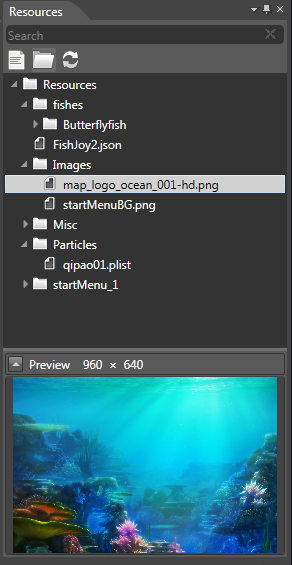

Resource Panel
Introduction

Resource window:
1. Manages the resources to be used in the project.
2. Helps the rendering area to reference resources.
Functions
Add File

1. Selects files from disk to import for use in CocoStudio. The multiple file import option is supported.
2. Files with duplicate names will not be imported.
Add Folder

1. Select folder from disk to import for use in CocoStudio.
2. Folders with duplicate names will not be imported.
Refresh Resource

1. Select this option to refresh the list of resources in a project after manually deleting or adding a file or folder in the Resources folder.
Search

This function searches for the resource you wish to use. The name of the resource should match the user's input.
Preview Resource
1. Select the resource name to preview the selected resources.
2. A hover preview of the resource should appear.
3. Double-click the resource name to preview the resource with a picture viewer.
Configure resources using drag and drop
1. Drag and drop the *.png file in the Resource directory to the Properties box to complete the configuration of the control file attributes.
Additional resource options using the right-click menu options
Open in Explorer
1. Opens selected file with Windows Explorer.
Rename
1. Renames resource name. Note that this option does not support the Plist rename function.
2. The name must not include illegal characters.
3. Type
Delete
1. Deletes the selected resource.
This action also deletes related files on the disk.
Import file
Imports file
1. Select files from the disk to import. The multiple file import option is supported.
2. Files with duplicate names will not be imported.
Import folder
1. Select folder from the disk to import.
2. Folders with existing names will not be imported.
Export Image
This option exports a plist picture or a PSD picture as a divided picture.
Refresh Resource
Use this option to refresh the list of resources in a project when you manually delete or add a file or folder under the Resources folder.